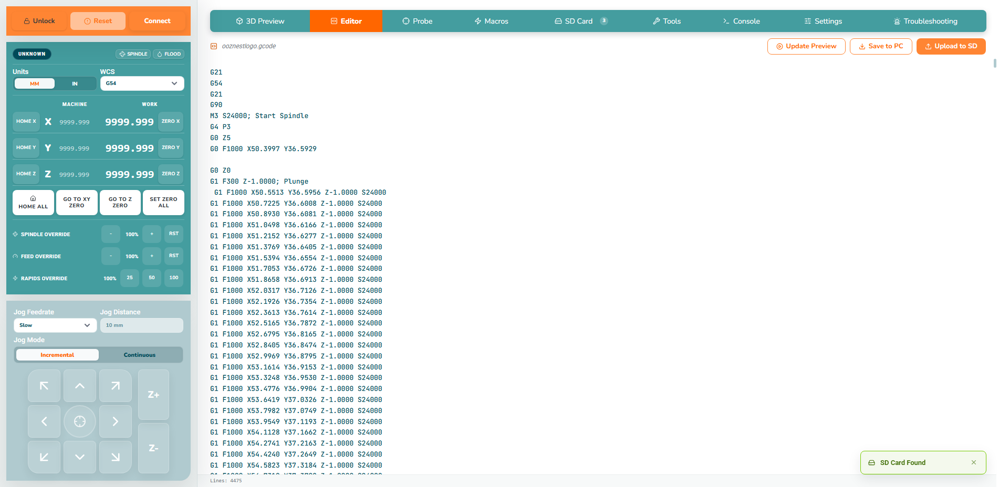
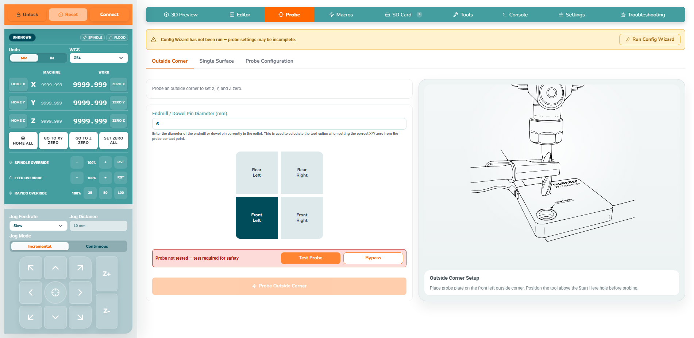
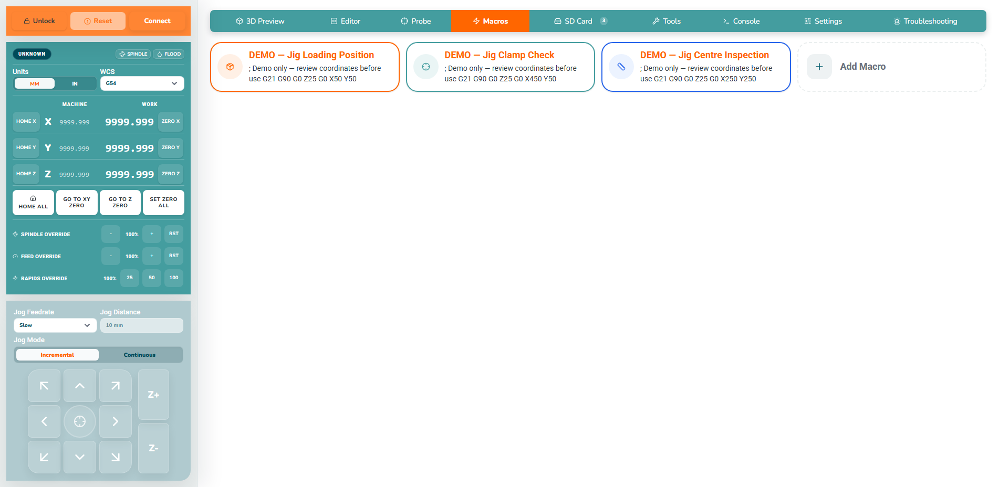
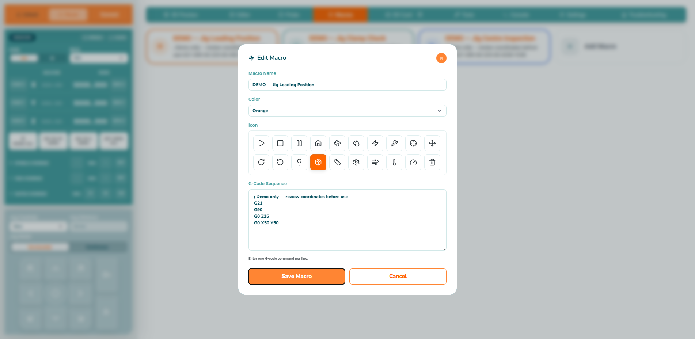
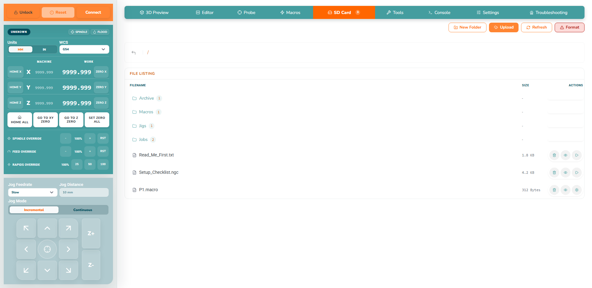
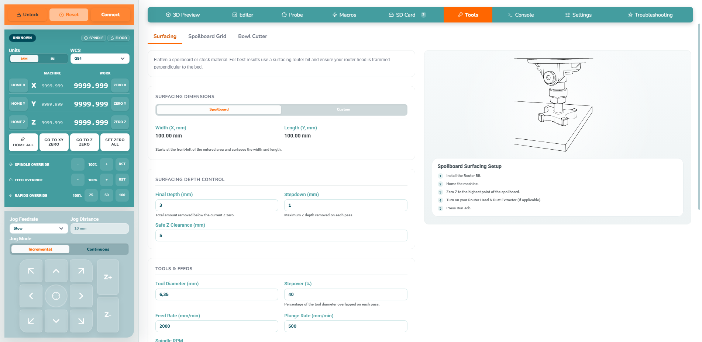
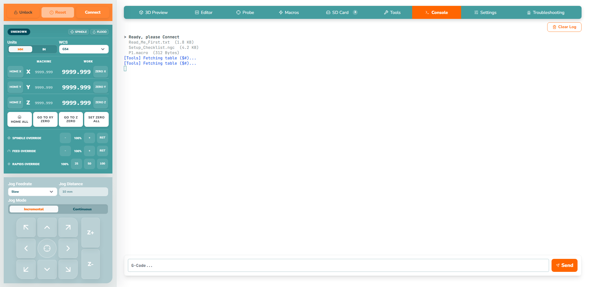

Editor
Inspect or amend G-code, then update the preview. Review units, origin, spindle/feed, rapid moves, tool changes, probing blocks and program end. Valid syntax can still be mechanically unsafe.

Probe
A probe is an electrical touch sensor. Select the operation and face, enter the fitted tool diameter, position safely above the probe, test the input and check feed/travel limits. Bypass is not a normal setup action.

Macros — including the Edit Macro modal
Macros are saved command sequences. Read their contents before first use; Run sends the commands to the real machine. Edit changes an existing macro, Delete removes it, and Add Macro creates a new one.


SD Card
Browse controller-stored files, open folders, preview a file, run it, or delete it. Keep a known-good computer copy. Format can remove card contents and is never routine cleanup.

Tools and Console
Tools contains the tool table and guided surfacing, spoilboard-grid and bowl-cutter operations. Review dimensions, depth, Safe Z, tool diameter, stepover, feed, plunge and spindle values against the actual setup. Console submits direct controller commands immediately.


Tool Change modal
When a tool change is requested, stop and verify the physical tool, collet, tightening, tool number, height reference and clearance before continuing. The connected tool-change state is pending tomorrow’s controller capture.